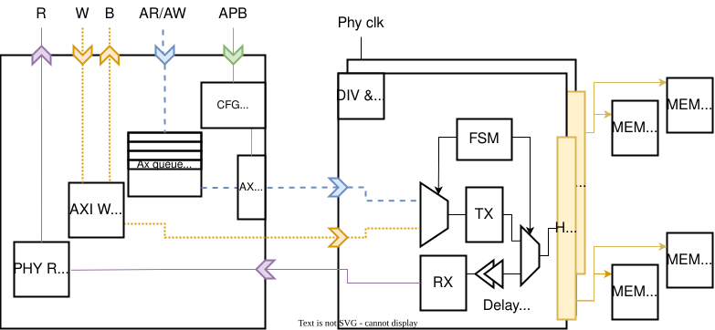

Specification
This page describes the architecture, interface, and implementation details of the HyperBus Controller IP.
Block Diagram

Figure 1 — Top-level block diagram of the controller.
The controller sits between the on-chip AXI4 interconnect (host side) and the off-chip HyperBus devices (memory side). A Regbus register interface provides runtime configuration.
Functional Description
Purpose
This IP provides a fully synthesizable RTL implementation of a HyperBus Controller, enabling seamless communication between an on-chip system and off-chip HyperBus devices such as HyperRAM (PSRAM) and HyperFlash (NOR Flash).
It abstracts the complexity of the HyperBus protocol and exposes a standard AXI4 slave interface to the host system controller.
Usage Context
HyperBus is primarily used to connect high-bandwidth, low-pin-count external memories:
- HyperRAM (PSRAM) — used as framebuffer, scratchpad, or general data memory
- HyperFlash (NOR Flash) — used for XIP (eXecute-In-Place) code execution
The controller can also interface with generic peripherals that implement the HyperBus electrical and timing specifications.
Typical applications include:
- MCU/SoC memory expansion
- Low-latency XIP code execution from HyperFlash
- Framebuffer or scratchpad memory using HyperRAM
- FPGA-based embedded systems requiring compact, high-speed external memory
Supported Standards and Protocols
This peripheral implements:
- AXI4 slave interface — read/write channels, bursts, protection attributes
- HyperBus protocol as defined in the Cypress/Infineon HyperBus Specification v1.x (publicly available)
- Standard HyperBus signaling for both device types:
CK/CK#— differential clockRWDS— read/write data strobe (latency signaling + write strobe)CS#— chip select (one per device)DQ[7:0]— bidirectional data bus
Interface
AXI4 Slave (Host Side)
The controller exposes a single AXI4 slave port. Key properties:
| Signal group | Description |
|---|---|
| Write address channel (AW) | Address, burst length, burst type, protection |
| Write data channel (W) | Data, strobe, last |
| Write response channel (B) | Response code (OKAY / SLVERR) |
| Read address channel (AR) | Address, burst length, burst type, protection |
| Read data channel (R) | Data, response code, last |
Constraints on AXI transactions:
- Only INCR (incrementing) bursts are supported. WRAP and FIXED bursts are not.
- Atomics (
ARLOCK/AWLOCKexclusive accesses) are not supported. - All accesses except byte-size must be aligned to 16-bit (2-byte) boundaries.
- Burst lengths follow standard AXI4 rules; the controller splits bursts as needed.
HyperBus PHY (Device Side)
| Signal | Direction | Description |
|---|---|---|
CK |
Output | HyperBus differential clock (positive) |
CK# |
Output | HyperBus differential clock (negative) |
CS#[N-1:0] |
Output | Chip select, one per device (active low) |
RWDS |
Bidir | Read/write data strobe — output during writes, input during reads |
DQ[7:0] |
Bidir | Bidirectional data bus |
Regbus Configuration Interface
Runtime configuration is exposed via a minimal Regbus register interface (address-mapped, synchronous). Data and address widths are parameterizable; register sizes must be a power of two larger than 16 bits.
Register Map
The register set provides runtime control over all protocol timing and device parameters.
Register Groups
| Group | Description |
|---|---|
| Timing | tACC, tRC, tCSHI, and other HyperBus timing parameters |
| Burst | Burst configuration, clock-stop enable, burst-split thresholds |
| Latency | Latency mode selection (fixed / variable), initial latency count |
| Refresh | HyperRAM auto-refresh optimization parameters |
| Status | Read-only: state machine status, error flags, device behavior |
| Power | Clock gating, HyperRAM low-power mode (Hybrid Sleep / Deep Power-Down) |
| Multi-chip | CS# assignment and per-device configuration |
<!-- TODO: embed or link generated register table here -->
Features and Requirements
Supported Operations
| Operation | HyperRAM | HyperFlash |
|---|---|---|
| Single read | ✅ | ✅ (WIP) |
| Burst read | ✅ | ✅ (WIP) |
| Single write | ✅ | ✅ (WIP) |
| Burst write | ✅ | ✅ (WIP) |
| Register read/write | ✅ | ✅ (WIP) |
| XIP read pipeline | — | ✅ (WIP) |
Architectural Features
Command and transaction management
- Automatic generation of HyperBus Command/Address (CA) packets
- Burst assembly and splitting based on AXI burst structure and device constraints
- Support for both memory types:
- HyperRAM: variable-latency reads, fixed-latency writes
- HyperFlash: command sequences, linear reads, programming operations (WIP)
Timing control
CK/CK#differential clock generationRWDSmonitoring for read latency determination and data strobe alignment- Turnaround, idle cycles, and write-to-read / read-to-write transitions
- PHY-level clock stopping for burst stalling
- Optional internal timing calibration (if enabled in the integration)
AXI interface
- AXI4-compliant read and write slave paths
- Burst length translation, alignment correction, and response generation
- Back-pressure and outstanding transaction control
- Independent read and write paths
Known Limitations
!!! warning "Restrictions" - Atomics are not supported. - Only linear (INCR) AXI bursts are supported. - All non-byte accesses must be aligned to 16-bit boundaries. - HyperFlash support is work in progress — only HyperRAM has been fully tested. - Clock-stop must be supported by the target device; there is no burst buffering to accommodate devices without clock-stop capability.
Open TODOs
- [ ] Support byte-aligned accesses for non-byte-size transfers
- [ ] Complete and validate HyperFlash support
- [ ] Add PSRAM support via an additional CA decoder
Timing Diagrams
!!! info "Work in progress" Timing diagrams for key transactions (single read, burst write, latency extension, clock stop) will be added here. In the meantime, refer to the HyperBus Specification for protocol-level timing.
Implementation details
Module Breakdown
The RTL is organized under src/. Top-level module: axi_hyper.
| Module | File | Description |
|---|---|---|
axi_hyper |
src/axi_hyper.sv |
Top-level: AXI slave + Regbus config + PHY |
| (AXI adapter) | src/ |
Translates AXI4 transactions to internal command stream |
| (Transaction FSM) | src/ |
Builds HyperBus CA packets, manages burst splitting |
| (PHY / clock gen) | src/ |
CK/CK# generation, DQ/RWDS IOB interface |
| (Register file) | hw/regs/ |
Auto-generated by regtool from register description |
!!! note Module names and file paths should be verified against the repository.
Parameters and Configurations
Top-level parameters of axi_hyper:
| Parameter | Type | Description |
|---|---|---|
AxiAddrWidth |
int | AXI address width (bits) |
AxiDataWidth |
int | AXI data width (bits) |
AxiIdWidth |
int | AXI ID width (bits) |
AxiUserWidth |
int | AXI user signal width (bits) |
RegAddrWidth |
int | Regbus address width |
RegDataWidth |
int | Regbus data width (must be power-of-two ≥ 16) |
NumChips |
int | Number of HyperBus CS# lines (devices) |
IsClockODelayed |
bit | Enable output-delay-based clock phase adjustment |
!!! note
Reset Behavior
The controller uses an active-low synchronous reset (rst_ni). On de-assertion:
- All FSMs return to idle state.
- AXI channels drain any in-flight transactions gracefully (no AXI protocol violation).
- Register file resets to default values (see register map for reset values).
- PHY outputs:
CK/CK#stops toggling,CS#deasserted (high),DQ/RWDStristated.
!!! note
Clock Structure
| Clock domain | Signal | Source | Description |
|---|---|---|---|
| System clock | clk_i |
SoC clock tree | Clocks AXI interface and control logic |
| HyperBus clock | clk_phy_i |
Separate PHY clock or divided clk_i |
Drives CK/CK# generation |
!!! note
The differential HyperBus clock (CK/CK#) is derived from clk_phy_i and gated during
idle periods and clock-stop events.
Power Domains
The IP is designed for a single power domain. Power management features include:
- Clock gating —
CK/CK#halted during idle or stall - HyperRAM low-power modes — Hybrid Sleep and Deep Power-Down, controlled via register map
- No multi-voltage domain crossings inside the IP